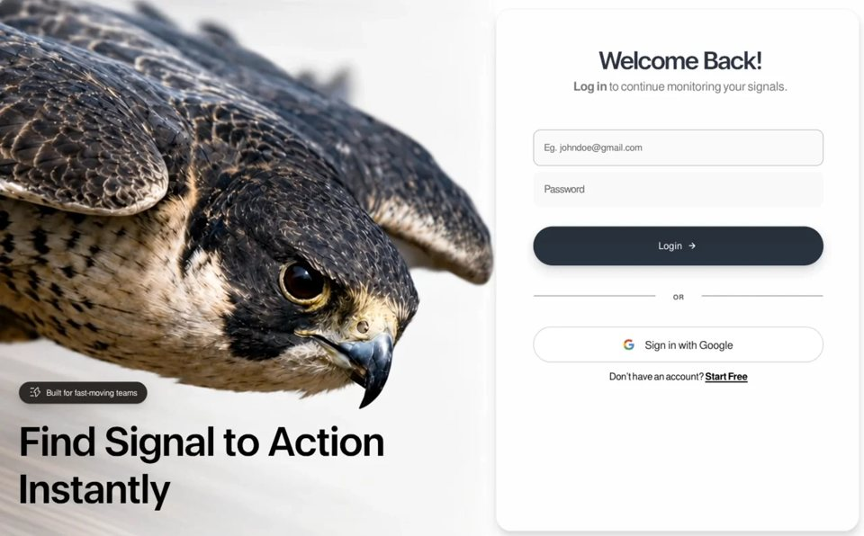

Real-Time Alerts
Sign insign-inyilai-ai 公开页面
收录时间：2026-08-14正文：22,058 字符

本地预览图 · jpeg
完整提示词
Build a single, self-contained `index.html` file — no build step, no external requests except one video URL, no frameworks, no dependencies. Everything (CSS, JS, SVG) is inline. The file is a pixel-locked recreation of a designed login page, reconstructed from a 1464×949 reference frame. Follow every number exactly; the design is calibrated, not approximate.
## 0. Global rules
- `<!DOCTYPE html>`, `<html lang="en">`.
- `<meta name="viewport" content="width=device-width, initial-scale=1, viewport-fit=cover">`
- `<title>Signal — Log in</title>`
- `html,body{height:100%;background:var(--page)}`; body sets `-webkit-font-smoothing:antialiased; text-rendering:geometricPrecision; overflow:hidden`.
- No semicolon-optional sloppiness — this is production-grade static output.
## 1. Fonts
Two families, both **embedded as base64 `data:font/woff2` URIs inside `@font-face`** (the page must work fully offline for type):
| Family | Weights | Format | Notes |
|---|---|---|---|
| `FreeSans` | 400, 700 (two separate `@font-face` blocks) | `format('woff2')` | Body/UI font |
| `Eloquia` | variable `200 800` | `format('woff2-variations')` | Display font for headline + card H1 |
All three declare `font-display:block` (no FOUT — the entrance animation waits on `document.fonts.ready`).
- Body stack: `'FreeSans',-apple-system,BlinkMacSystemFont,'Helvetica Neue',Arial,sans-serif`
- Display usage: `font-family:'Eloquia',sans-serif` **plus** `font-variation-settings:'wght' var(--hl-wght)` — the variable axis is what sets weight, not `font-weight`.
If you cannot source the exact fonts, substitute a grotesque for FreeSans and a variable geometric sans for Eloquia, keep `font-variation-settings`, and say so — do not silently swap in a system font.
## 2. The hero media (video, not an image)
The left panel's artwork is a **looping video of a peregrine falcon in a high-speed dive** — feathers rippling in the wind, eye locked forward, background streaking with motion blur, slow camera push-in. 1352×1532, ~5s, silent.
Source URL (use exactly this):
```
https://d8j0ntlcm91z4.cloudfront.net/user_38xzZboKViGWJOttwIXH07lWA1P/hf_20260813_052122_e77a27e6-17f1-4794-889b-3ceaa0e9e8cb.mp4
```
There are **two** `<video>` elements — responsive variants that CSS shows/hides, both pointing at the same file:
```html
<video class="photo-img photo-img--tall" autoplay muted loop playsinline preload="auto" poster="data:image/webp;base64,…">
<source src="falcon.mp4" type="video/mp4">
</video>
<video class="photo-img photo-img--wide" aria-hidden="true" autoplay muted loop playsinline preload="auto" poster="data:image/webp;base64,…">
<source src="falcon.mp4" type="video/mp4">
</video>
```
- `autoplay muted loop playsinline` are all four required (muted + playsinline are what let iOS autoplay).
- `poster` on each is a **base64 webp still of the same falcon** (the original 1177×1336 photograph), so first paint is the photo and there is no empty flash while the video buffers.
- The `--tall` one carries `alt`-equivalent meaning; the `--wide` duplicate is `aria-hidden="true"`.
- Either reference the CloudFront URL directly in `src`, or download it beside the file as `falcon.mp4` and reference it relatively.
## 3. Design tokens (`:root`)
Reference frame and box metrics:
```
--W:1464; --H:949; --photoW:836; --paneW:628; --cardW:613; --cardH:922;
```
Type and spacing tokens — reproduce verbatim:
```
--badge-fs:13.60px; --badge-fw:400; --badge-ls:-0.163px; --badge-gap:10px; --badge-dy:0px; --badge-ws:0px;
--badge-left:34px; --badge-top:684px;
--hl-lh:1; --hl-wght:578;
--hl1-fs:69.14px; --hl1-ls:-1.936px; --hl1-ws:0px; --hl1-left:33.00px; --hl1-top:750.02px;
--hl2-fs:68.95px; --hl2-ls:-1.931px; --hl2-left:32.00px; --hl2-top:831.01px;
--h1-top:65.00px; --h1-fs:42.55px; --h1-ls:-2.553px; --h1-ws:1.300px; --h1-wght:584;
--sub-top:120.00px; --sub-fs:20.41px; --sub-ls:-0.245px; --sub-ws:-2.000px; --sub-fw:400; --sub-fwb:700;
--fieldpad:19px;
--eph-fs:15.68px; --eph-ls:-0.188px; --eph-left:17.0px; --eph-fw:400; --eph-ws:0px;
--pph-fs:17.29px; --pph-ls:-0.698px; --pph-left:18px; --pph-fw:400;
--login-fs:16.38px; --login-fw:400; --login-ls:0.200px; --login-gap:10px; --login-dy:0.00px; --login-padl:-12.00px;
--arrow-w:13.2px;
--div-top:477px; --or-fs:11.5px; --or-fw:700; --or-ls:0.8px; --or-dy:2.00px; --or-dx:0.00px;
--or-line-l:205px; --or-line-r:204px;
--g-gap:17px; --g-icon:18.5px;
--gt-fs:18.10px; --gt-fw:400; --gt-ls:-0.217px; --gt-ws:-1.000px; --gt-dy:1.00px;
--bt-top:611.00px; --bt-fs:16.37px; --bt-fw:400; --bt-ls:-0.196px; --bt-ws:-2.060px; --bt-fwb:700; --bt-uo:3px;
--card-shadow:1px 10px 14px rgba(10,14,20,0.14), 0 1px 3px rgba(10,14,20,0.05);
--cs:1;
```
Palette:
```
--ink:#000; --h1-color:#2c3343; --sub-grey:#797979;
--badge-bg:#2f2a27; --ph:#606060; --or:#5a5a5b;
--gtext:#232424; --bottom:#0a0a0a;
--btn1:#283139; --btn2:#293340;
--inputFill:#fafafa; --inputBorder:#acacae; --pwFill:#f9f9f9;
--gBorder:#c8c8ca; --divider:#b1b1b2; --page:#fefefe;
```
Note the deliberate asymmetries — they are intentional, not typos: the two headline lines differ slightly in size/tracking (69.14 vs 68.95px), the OR divider rules differ by 1px (205/204), the email and password fields differ in fill, height, border and padding, and `--login-padl` is negative to optically center the Login label against its trailing arrow.
## 4. Structure
```
body > .stage
section.photo
video.photo-img.photo-img--tall
video.photo-img.photo-img--wide
div.scrim
div.hero#hero
div.badge → inline SVG lightning/signal glyph + span#badgeTxt
div.hl-wrap → span.hl#hl1, span.hl#hl2
section.pane
div.card#card
div.card-in#cardIn
h1.col.center#h1
p.col.center#sub
div.field#email > input
div.field#pw > input
button#loginBtn > span + arrow SVG
div.divider > i + b + i
button#gBtn > Google SVG + span
p#bottom > text + a
```
Copy:
- Badge: **"Built for fast-moving teams"**
- Headline line 1: **"Find Signal to Action"** · line 2: **"Instantly"**
- H1: **"Welcome Back!"**
- Sub: **`<b>Log in</b> to continue monitoring your signals.`**
- Email placeholder: **"Eg. johndoe@gmail.com"** (`type="email"`, `autocomplete="email"`, `aria-label="Email address"`)
- Password placeholder: **"Password"** (`type="password"`, `autocomplete="current-password"`, `aria-label="Password"`)
- Button: **"Login"** + right-arrow · Divider: **"OR"** · Google button: **"Sign in with Google"**
- Footer: **"Don't have an account? "** (curly apostrophe `’`) + link **"Start Free"**
Both buttons are `type="button"`. There is no `<form>` and no submit handling — this is a static composition.
### Inline SVGs
**Badge glyph** — `viewBox="0 0 582 557"`, single white `fill-rule="evenodd"` path, rendered 17 × 16.27px, nudged `top:-1px`:
```
M449.0 0.0 435.0 0.0 415.0 10.0 200.0 249.0 187.0 276.0 189.0 299.0 212.0 326.0 232.0 332.0 289.0 334.0 289.0 516.0 301.0 543.0 324.0 556.0 346.0 556.0 374.0 536.0 573.0 311.0 582.0 288.0 579.0 264.0 559.0 240.0 539.0 233.0 478.0 230.0 478.0 32.0 470.0 13.0ZM442.0 38.0 446.0 250.0 466.0 267.0 540.0 270.0 547.0 285.0 341.0 520.0 332.0 522.0 324.0 514.0 321.0 314.0 307.0 300.0 295.0 297.0 233.0 297.0 224.0 291.0 221.0 282.0ZM1.0 67.0 4.0 81.0 17.0 90.0 216.0 90.0 223.0 87.0 232.0 74.0 228.0 57.0 215.0 49.0 18.0 49.0 5.0 57.0ZM0.0 285.0 4.0 300.0 17.0 308.0 105.0 308.0 118.0 299.0 121.0 291.0 119.0 278.0 111.0 270.0 103.0 267.0 17.0 267.0 4.0 275.0ZM1.0 495.0 4.0 511.0 10.0 517.0 23.0 520.0 179.0 520.0 191.0 516.0 200.0 500.0 196.0 488.0 182.0 479.0 18.0 479.0 9.0 483.0Z
```
**Login arrow** — `viewBox="0 0 22 22"`, `<path d="M3 11h15.4M11 3.3l7.7 7.7-7.7 7.7" stroke="#fff" stroke-width="2.6" stroke-linecap="round" stroke-linejoin="round"/>`
**Google mark** — standard 4-colour `viewBox="0 0 48 48"`, exact fills `#EA4335`, `#4285F4`, `#FBBC05`, `#34A853`.
## 5. Desktop layout (the base composition)
- `.stage{position:fixed;inset:0;overflow:hidden}`
- `.photo{position:absolute;left:0;top:0;height:100%;width:57.1038%;overflow:hidden}` — that is 836/1464.
- `.photo-img{position:absolute;inset 0;width:100%;height:100%;object-fit:cover;object-position:100% 50%;display:block;-webkit-user-drag:none}`
- `.scrim` — `display:none` on desktop; a white top-down gradient defined but unused until mobile.
- `.hero{position:absolute;left:0;bottom:0;width:836px;height:949px;transform-origin:left bottom;pointer-events:none}` with `.hero>*{pointer-events:auto}`. JS scales this whole block.
- `.badge` — `inline-flex`, height 37px, padding `0 16px 0 19px`, `border-radius:999px`, background `--badge-bg`, `backdrop-filter:blur(7px) saturate(120%)`, shadow `0 1px 2px rgba(0,0,0,.18), 0 6px 18px rgba(0,0,0,.14)`, white text, `white-space:nowrap`.
- `.hl` — absolutely positioned, Eloquia, `line-height:1`, `color:var(--ink)`, `white-space:nowrap`.
- `.pane{position:absolute;left:57.1038%;right:0;top:0;bottom:0}`
- `.card` — `left:1px;top:14px;width:613px;height:922px;border-radius:26px;overflow:hidden; background:rgba(254,254,254,.90); backdrop-filter:blur(28px) saturate(160%); border:1px solid rgba(0,0,0,.036); box-shadow:var(--card-shadow)`.
- `.card-in` — 613×922, `transform-origin:left top` (JS scales it).
- `.col{position:absolute;left:62px;width:488px}`; `.field{left:62px;width:489px;display:flex;align-items:center;border-radius:12px}`.
- `#email{top:203px;height:61px;background:var(--inputFill);border:1.5px solid var(--inputBorder)}`
- `#pw{top:273.5px;height:59px;background:var(--pwFill);border:0}`
- `#loginBtn{left:62px;top:366px;width:489px;height:65.5px;border-radius:999px;background:linear-gradient(180deg,var(--btn1) 0%,var(--btn2) 100%);color:#fff;display:flex;align-items:center;justify-content:center;gap:var(--login-gap);padding-left:var(--login-padl);padding-right:4px;box-shadow:0 8px 20px rgba(18,26,34,.16), 0 2px 5px rgba(18,26,34,.10)}`
- `.divider{left:63px;top:var(--div-top);width:487px;display:flex;align-items:center;justify-content:center}` — `i` rules are `height:1.5px`, first `flex:0 0 205px`, last `flex:0 0 204px`, `b` is `flex:1 1 auto`.
- `#gBtn{left:62px;top:535px;width:489px;height:59.5px;border:1.5px solid var(--gBorder);border-radius:999px;background:rgba(255,255,255,.92);box-shadow:0 1px 2px rgba(0,0,0,.03)}`
- `#bottom{left:62px;width:489px;top:var(--bt-top);text-align:center}`; its link is `#000`, weight 700, `text-decoration:underline`, `text-underline-offset:3px`, `text-decoration-thickness:2px`.
Interaction states:
- `#loginBtn` — `transition:transform .18s cubic-bezier(.2,.7,.3,1), box-shadow .18s ease, filter .18s ease`; `:hover{filter:brightness(1.12)}`; `:active{transform:translateY(1px)}`
- `#gBtn` — `transition:background .18s ease, box-shadow .18s ease, transform .18s cubic-bezier(.2,.7,.3,1)`; `:hover{background:#fff;box-shadow:0 3px 10px rgba(0,0,0,.07)}`; `:active{transform:translateY(1px)}`
- `:focus-visible{outline:2px solid #2b6cb0;outline-offset:2px}`
- `@media (prefers-reduced-motion:reduce){*{transition:none!important;animation:none!important}}`
## 6. Responsive engine (JS-driven, three modes)
An IIFE owns layout. Constants:
```js
var REF_W=1464, REF_H=949, PHOTO_W=836, PANE_W=628, CARD_W=613, CARD_H=922;
var CONTENT_H=697; // form block + breathing room, reference px
var IMG_W=1177, IMG_H=1336, IMG_REF_SCALE=836/1177;
var PANE_RATIO=PANE_W/REF_W;
var HERO_W=681, HERO_H=219; // hero block extents, reference px
var REF_CARD_ASPECT=692/855;
var RAMP_HI=1280, RAMP_LO=1000, PHOTO_MIN=0.42;
var RAMP_LO2=820, PHOTO_MIN2=0.36;
var TP={"pad":0.1076,"h1Top":0.08656,"h1Fs":0.06839,"subTop":0.17368,"subFs":0.0309,"emTop":0.25435,"emH":0.10257,"emR":0.0202,"ephFs":0.02702,"ephPad":0.0332,"pwTop":0.36851,"pwH":0.10839,"btnTop":0.50435,"btnH":0.10981,"btnFs":0.0275,"arrow":0.026,"btnGap":0.02,"divTop":0.68222,"orFs":0.02245,"orPad":0.051,"divH":0.0026,"gTop":0.76445,"gH":0.09966,"gIcon":0.032,"gtFs":0.03205,"gGap":0.026,"btTop":0.89668,"btFs":0.1058,"badgeH":0.0742,"heroLh":1.1246,"heroBot":0.06493,"heroGap":-0.30423,"heroSide":0.0525};
```
(`btFs` is `0.02876` and `heroFs` is `0.1058` — keep both keys.)
Breakpoints are declared once as media-query objects and shared by CSS intent and the layout pass:
```js
var mqLandscape = window.matchMedia('(min-width:700px) and (min-aspect-ratio:51/50)');
var mqPortrait = window.matchMedia('(min-width:700px) and (max-aspect-ratio:51/50)');
```
### Mode A — `land` (desktop / landscape ≥700px)
- Photo column width comes from `photoRatio(vw)`: at ≥1280px it is the untouched `1 - PANE_RATIO` (57.1%); from 1280→1000 it eases linearly down to `0.42`; from 1000→820 it eases further to `0.36`. This yields width to the card as the frame narrows so the form stays legible, with no jump.
- `placeCard(paneW, vh)`: `cs = Math.min(paneW/PANE_W, vh/CONTENT_H)`; margins `gapL=1*cs, mT=14*cs, mB=13*cs, mR=14*cs`; card width `Math.max(CARD_W*cs, paneW-gapL-mR)`, height `vh-mT-mB`, radius `26*cs`, border `Math.max(1,cs)`. Then `cardIn.style.transform='translate('+((cw-CARD_W*cs)/2)+'px,0) scale('+cs+')'` — the interior is *scaled*, so all the fixed pixel values above hold at any size.
- `seatHero(photoW, vh)`: the hero rides the video's own cover-scale but is never wider than its panel — `imgScale=Math.max(photoW/IMG_W, bandH/IMG_H)`, then `s=Math.min(imgScale/IMG_REF_SCALE, photoW*0.92/HERO_W)`, applied as `transform:scale(s)` with `transform-origin:left bottom`, `bottom:0`.
### Mode B — `tabport` (≥700px, portrait) — `body.tabport`
The two-column split has nowhere to go, so the photo becomes a **masthead band** with badge + headline seated at its foot, and the card takes the full measure underneath. Proportions from a 1086×1448 tablet reference:
- band = `round(vh*0.425)`; side margin = `round(vw*0.0525)`; footer = `round(vh*0.0297)`.
- Photo becomes `width:100%;height:var(--band-h)`, and swaps to the `--wide` video with `object-position:50% 50%`.
- Hero becomes a static flex column anchored to the band's bottom, with `--tp-hero-b`, `--tp-hero-gap` (note: **negative**, −0.30423 × band) and a scaled badge via `--badge-k = band*0.0742/37`.
- The headline goes inline-wrapping inside `.hl-wrap`; its measure is set to `round(headlineMeasure()*0.61)px` so the line can only break after "to". `headlineMeasure()` clones a hidden span with the computed font-family/size/weight/letter-spacing/word-spacing/variation-settings, measures "Find Signal to Action Instantly", and removes it.
- The card interior goes **fluid, not scaled**: `card-in` becomes `inset:0`, `transform:none`. Every interior value is written as a CSS var derived from the card's own measure — vertical keys off `cardH`, `pad`/`orPad` off `cardW`, hero/badge keys off the band, everything else off `S = Math.min(cardH, cardW*REF_CARD_ASPECT)`. Camel-case TP keys convert to `--tp-kebab-case`.
- Tablet CSS re-derives tracking proportionally, e.g. `letter-spacing:calc(var(--h1-ls)/var(--h1-fs)*var(--tp-h1-fs))`.
### Mode C — `phone` (<700px) — `body.stacked`
A real document-flow composition — **nothing is viewport-scaled**, so type stays readable and short screens scroll.
- `--mobile-hero-h:clamp(244px,34svh,304px)`; body becomes `height:auto;min-height:100%;overflow-y:auto;background:#fff`; `.stage` becomes a relative flex column with `min-height:100svh`.
- Photo is a relative band of `--mobile-hero-h`, using the `--wide` video with `object-position:64% 48%` and `transform:scale(1.015)`.
- `.scrim` turns **on** here: `linear-gradient(180deg,rgba(7,10,13,.02) 18%,rgba(7,10,13,.12) 48%,rgba(7,10,13,.78) 100%)`.
- Hero sits bottom-left over the scrim; badge becomes `height:31px;padding:0 12px;background:rgba(24,27,30,.82);box-shadow:0 4px 16px rgba(0,0,0,.18)`, 11px label. Headline lines go **white** on the photo: `font-size:clamp(30px,8.8vw,38px);letter-spacing:-.035em;line-height:.96;text-shadow:0 2px 18px rgba(0,0,0,.32)`.
- Card overlaps the photo: `margin:-28px 0 0;border-radius:28px 28px 0 0;background:#fff;border:0;box-shadow:0 -10px 28px rgba(20,28,36,.10);min-height:calc(100svh - var(--mobile-hero-h) + 28px)`.
- `card-in`: `max-width:500px;margin:0 auto;padding:36px clamp(24px,7vw,38px) max(30px,env(safe-area-inset-bottom));display:flex;flex-direction:column;justify-content:center`.
- All children go `position:static;width:100%`. Fields 56px, login button 58px, Google button 56px, **inputs at `font-size:16px`** (prevents iOS zoom-on-focus). H1 `clamp(31px,8.8vw,38px)`, sub 15px, footer 14px.
- `@media (max-width:370px)`: hero 232px, tighter padding, headline pinned to 30px.
- `@media (max-height:520px) and (orientation:landscape)`: hero 208px, `card-in` switches to `justify-content:flex-start`.
- The JS phone branch is deliberately **empty** — it only calls `setMode('phone')`. Keeping it free of measurements prevents stale desktop/tablet inline values.
### Mode-switch hygiene (important)
Every branch writes inline styles, and inline styles outrank the stylesheet. On a mode change, **wipe first**: `clearInline()` resets `cssText=''` on `photo`, `pane`, `card`, `cardIn`, `hero`. Without this, the outgoing mode's `left/top/width/padding` stay latched and the incoming mode's CSS never applies — the layout would only look right after a reload. None of these elements carry a `style` attribute in the markup, so clearing is safe.
`layout()` is bound to `resize` (passive), `orientationchange`, both media-query `change` events, `document.fonts.ready`, and is called once immediately.
## 7. Entrance animation (runs exactly once)
**Pre-paint guard.** A tiny `<script>` in `<head>`, *before* the stylesheet, adds `entry-pending` to `<html>` and arms a 3500ms safety release:
```js
document.documentElement.classList.add('entry-pending');
window.__entryFallback=setTimeout(function(){
document.documentElement.classList.remove('entry-pending');
},3500);
```
With JS disabled the class is never added, so the complete page stays visible. This is the whole no-JS story — do not add a `<noscript>` block.
**CSS first-frame states** (`.entry-pending …`) set `opacity:0` and `will-change:transform,opacity,clip-path` on: `.card`, `.badge`, `#hl1`, `#hl2`, `#h1`, `#sub`, `#email`, `#pw`, `#loginBtn`, `.divider`, `#gBtn`, `#bottom` — plus per-element transforms: card `translateY(12px) scale(.988)`, badge `translateY(8px)`, headlines `translateY(16px)` **with `clip-path:inset(100% 0 0 0)`**, h1/sub `translateY(10px)`, the rest `translateY(8px)`. Under `max-width:699px` the card uses `translateY(14px)` and headlines `translateY(12px)`. Under `prefers-reduced-motion:reduce` every one of these is forced back to `opacity:1;transform:none;clip-path:none;will-change:auto`.
**The photograph/video is deliberately excluded — it is the static stage and never animates.**
**The timeline.** A second IIFE at the end of `<body>`. If reduced-motion is on or `Element.prototype.animate` is missing, it just calls `releaseEntrance()` and returns. Otherwise, two easings — `ease='cubic-bezier(.16,1,.3,1)'` and `softEase='cubic-bezier(.22,1,.36,1)'` — and `compact = matchMedia('(max-width:699px)').matches` picks the compact offsets. Each step is a WAAPI `el.animate([from,to],{delay,duration,easing,fill:'both'})`:
| Target | Delay | Duration | Easing | From |
|---|---|---|---|---|
| `.card` | 40 | 820 | ease | `opacity:0`, `translateY(14px)` compact else `translateY(12px) scale(.988)` |
| `.badge` | 120 | 480 | softEase | `translateY(8px)` |
| `#hl1` | 240 | 760 | ease | `translateY(16/12px)` + `clipPath:inset(100% 0 0 0)` |
| `#hl2` | 330 | 760 | ease | `translateY(16/12px)` + `clipPath:inset(100% 0 0 0)` |
| `#h1` | 470 | 620 | ease | `translateY(10px)` |
| `#sub` | 570 | 560 | ease | `translateY(10px)` |
| `#email` | 720 | 520 | softEase | `translateY(8px)` |
| `#pw` | 790 | 520 | softEase | `translateY(8px)` |
| `#loginBtn` | 930 | 560 | ease | `translateY(8px)` |
| `.divider` | 1060 | 440 | softEase | `translateY(6px)` |
| `#gBtn` | 1150 | 540 | ease | `translateY(8px)` |
| `#bottom` | 1260 | 500 | softEase | `translateY(6px)` |
All `to` states are `{opacity:1,transform:'none'}` (headlines also `clipPath:'inset(0 0 0 0)'`).
Design intent, in order: **surface establishes depth → brand promise overlaps it → functional form groups resolve last.**
**Handoff.** Immediately after scheduling, remove `entry-pending` from `<html>` — the animation layer now owns the hidden first frame, so the CSS guard can drop without flashing. Then `Promise.allSettled(animations.map(a=>a.finished))` → `cancel()` every animation, empty the array, and `releaseEntrance()` (which also clears `__entryFallback`). Cancelling restores the authored static styles exactly, leaving no `fill:'both'` residue.
**Trigger.** `Promise.race([document.fonts.ready, new Promise(r=>setTimeout(r,650))])` then a double `requestAnimationFrame` before starting — fonts get a chance to land, but a slow font can never stall the page past 650ms.
## 8. Acceptance checks
1. Desktop 1464×949 reproduces the reference frame exactly.
2. Resizing 1400 → 900 → 700 shows the photo column easing back smoothly with no jump and no reload needed.
3. Rotating a tablet swaps cleanly between `land` and `tabport` (proof that `clearInline()` works).
4. On a phone the page scrolls, inputs do not trigger iOS zoom, and the headline is white over the scrim.
5. The entrance plays once on load and never again on resize.
6. With `prefers-reduced-motion:reduce`, everything is visible immediately and nothing moves.
7. With JS disabled, the full page renders statically.
8. The falcon video autoplays silently and loops in every mode, with the poster still visible during buffering.把上面的提示词完整复制到支持长文本的 AI 工具中，再按需要替换品牌名、配色与文案。提示词描述的是整页结构与动效节奏，生成后建议在真实浏览器里检查首屏加载和移动端表现。
来源与版权
该条目来自公开提示词页面，原始出处信息未随页面提供。
提示词文本与预览素材的版权归原作者或原平台所有，本站仅作索引与归档。若你是权利人并希望移除本条内容，请通过联系方式告知。
同分类提示词
暂无同分类条目。